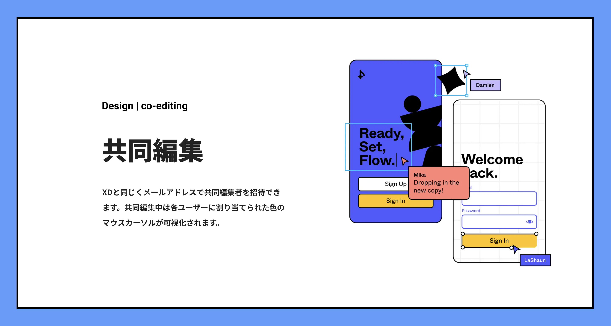

山村・岩橋ペアの発表テーマは「グラフィックツール」です。
現在、アンティー・システムではAdobe
XDをファーストチョイスとして使用していますが、
どうやらFigmaも良いらしい、という話をよく聞きます。
ググっただけでちょっと知った気になっていたけど、
何が良いのか悪いのかはやっぱり実際に使ってみないとわからない。
じゃあ実際に使ってみよう、ということで
Figmaを使ってFigmaを紹介するwebページをつくってみることにしました。
ほんの一部ではありますが、気になった機能や使い勝手をお話しできればと思います！
Figma
Figmaは2016年にリリースされたデザインからプロトタイプの共有まで、
すべてブラウザ上でおこなえるデザインツールです。
デスクトップアプリと比べても遜色のない優れたデザイン／共有機能で
数々の有名企業で採用されているんだとか。

- 
使ってみた感想
ショートカットなどこれまで使ってきたソフトと同じ部分が多くすんなり入れた。機能の使い方を調べていると、古い記事に「XDにはない機能」的なことが書いてあるのを何度か見たが、日々のアップデートで今ではできることに明確な良し悪しの差はなくなっている印象を受けた。個人的にもっとも差を感じたのが、シャドウなどエフェクトの強さを設定できること。オートレイアウトにするための「フレーム化」という概念が少し分かりにくかったり、きちんと使うには多少の学習コストがかかるので案件で使うことになった際、困らないようにはしておきたい。
個人的に良いと思った点は、選択したパーツに適用されているコンポーネント名が右側のデザインパネルに表示されること。コーディングに必要な情報はXDも右側に集約されているが、適用されているコンポーネント名はレイヤーを見ないとわからない。目線の移動が減ることでより作業がしやすく感じた。また、複数のパーツを選択した際に、グループ化をしなくても横幅の合計が表示される。何気に便利。今回の課題で初めてFigmaに触れたが、操作性がXDに近いこともあり違和感なく作業ができた。コーディングにおいては、XDに慣れていれば学習コストは低いように感じる。